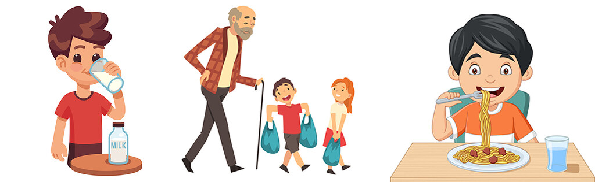

Welcome to the new lecture of our online course on the Czech language.Today we’ll talk about conjugating irregular verbs - “Časování nepravidelných sloves”.Well, let's get started!
Theory: Časování nepravidelných sloves
A directed verb is a verb that cannot be attributed to any conjugation based on the type of initial indefinite form (infinitive).
The infinitive or indefinite initial form of a verb looks one way but changes in a completely different way.
To conjugate an irregular verb, you must know at least one of its forms in any person. In the examples we will be guided by the form "JÁ"
Psát - psaat - form "JÁ" - Píšu/píši - piishu (we rarely use the form with the ending I, although it is acceptable for some verbs)
THAT MEANS we conjugate the verb AS THE THIRD GROUP of verbs (ending - ovat)
Číst - cheest - form of "JÁ" - Čtu - chtu - not a form of "JÁ"
THAT MEANS we conjugate the verb AS THE THIRD GROUP of verbs (ending - ovat)
Jít - yiit - form of "JÁ" - Jdu - ydu
THAT MEANS we conjugate the verb AS THE THIRD GROUP of verbs (ending - ovat)
Žít - zhiit - form "JÁ" - žiju - zhiyu
THAT MEANS we conjugate the verb AS THE THIRD GROUP of verbs (ending - ovat)
Říct - rzhiitst - form of "JÁ" - řeknu - rzheknu
THAT MEANS we conjugate the verb according to the third group of verbs (ending - ovat )
já - ending u/i - píšu, čtu, jdu, žiju, řeknu
ty - ending eš - píšeš, čteš, jdeš, žiješ, řekneš
on/ona/ono - ending e - píše, čte, jde, žíje, řekne
my - ending eme - píšeme, čteme, jdeme, žijeme, řekneme
The easiest way to remember irregular verbs is to form simple sentences. And the more connected they are to your life, the better they will work.For example:
Myju svůj stříbrný hrneček. I wash my silver cup.
Jedu k babičce Nině. I'm going to see Grandma Nina.
Useful phrases
Ahoj - Aghoy - Greeting/Hello
Čau - Chau - Hello/bye
Čus - chus - Hello/bye
Nazdar - nazdar - “Greetings” (goodbye)
Zatím - zateem (say goodbye for a while)
Pa-Pa - pa-pa - Bye-bye
Practice
1. Dejte slova do vět ve správné formě
2. Podívejte se na obrázky a opravte následující věty.

1) Mladý kluk, který má hnědé vlasy, piju čaj.
2) Starý dědeček nese těžké tašky.
3) Hladový kluk jedí špagety a pije džus.
3. Do vět podle smyslu správné formy slovesa “jít”.